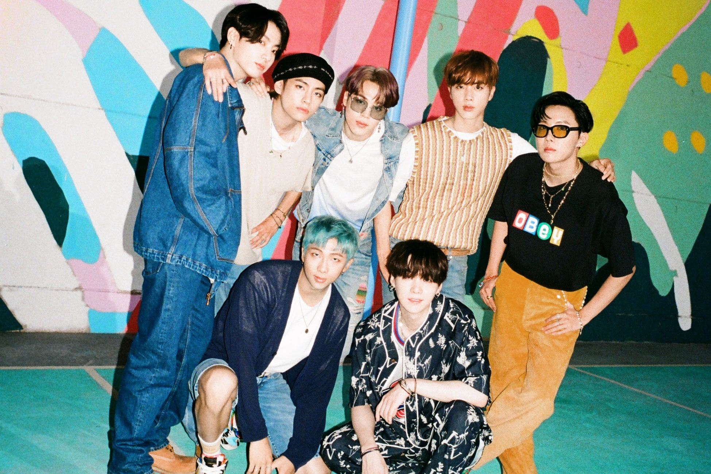
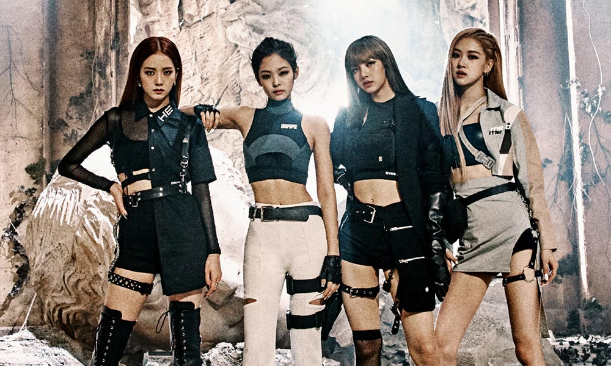
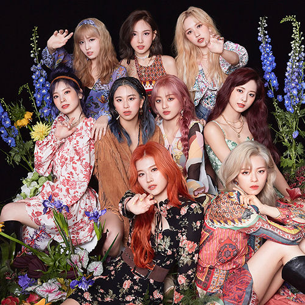
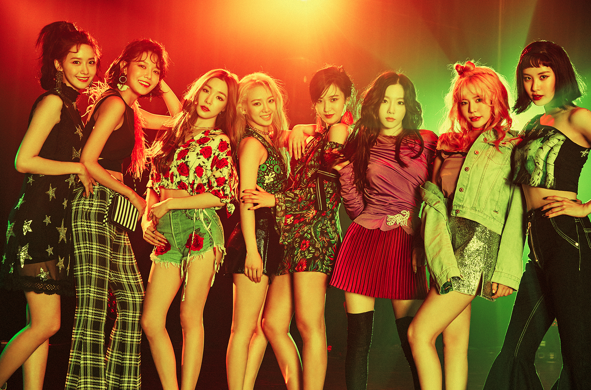
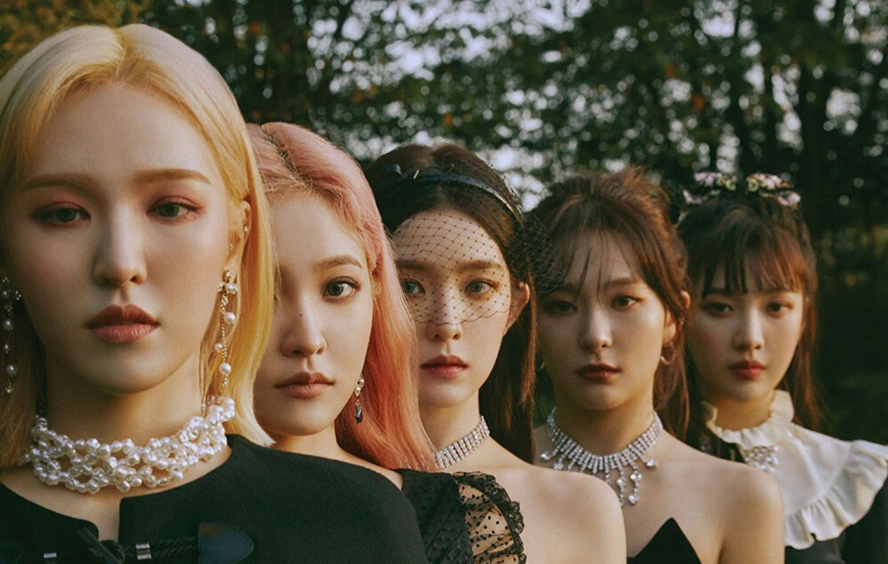
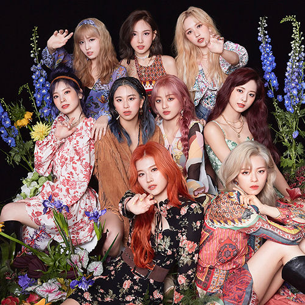
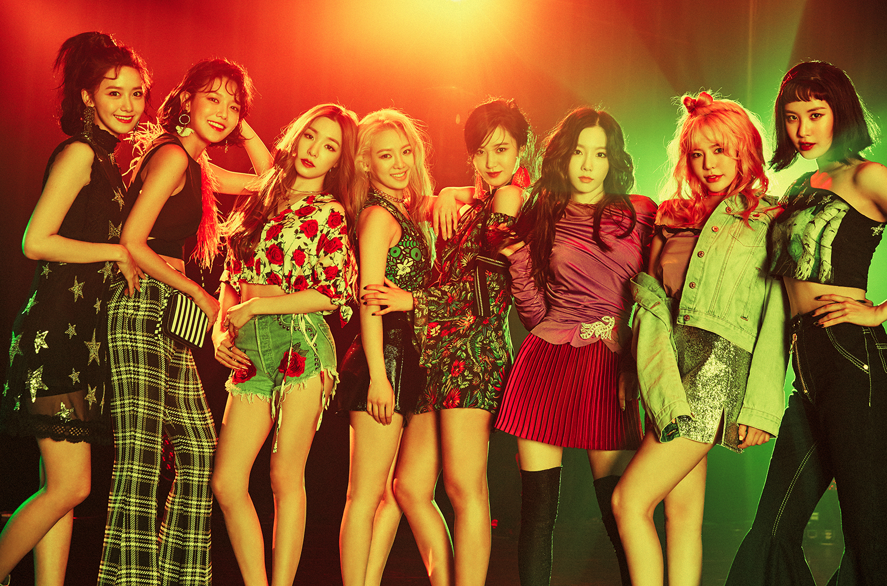
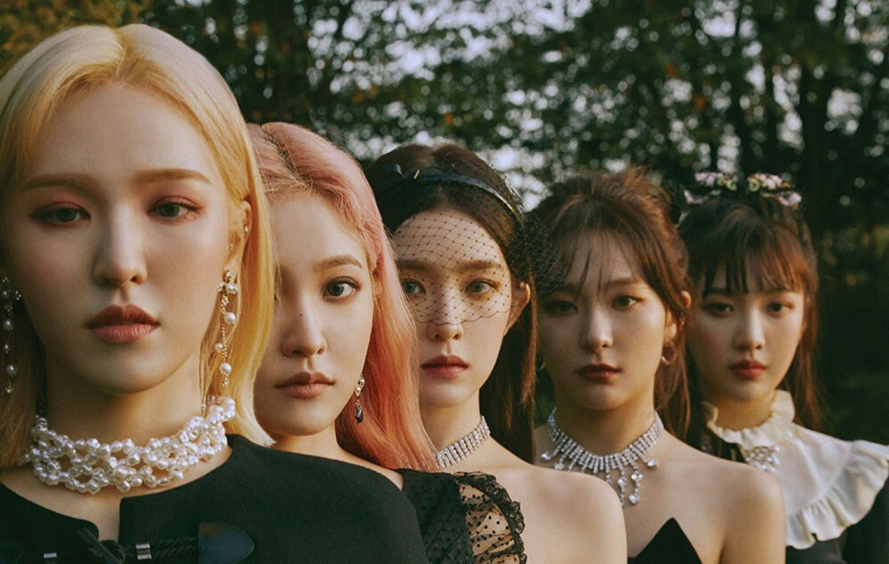

Best K-pop groups of all time
BTS

Image from https://www.teenvogue.com/story/bts-dynamite-teaser-photos-new-hair-colors-retro-nostalgia
BlACKPINK

Image from https://www.udiscovermusic.com/stories/blackpink-things-you-need-to-know/
BIGBANG
 Image from https://open.spotify.com/artist/4Kxlr1PRlDKEB0ekOCyHgX
EXO
Image from https://open.spotify.com/artist/4Kxlr1PRlDKEB0ekOCyHgX
EXO
 Image from https://www.kpopmap.com/who-are-the-tallest-and-the-shortest-exo/
TWICE

Image from https://www.deezer.com/en/artist/161553
Girl's Generation

Image from https://www.billboard.com/music/music-news/girls-generation-decade-10-years-k-pop-fans-interview-7934088/
Red Velvet

Image from https://www.nme.com/news/music/red-velvet-comeback-full-group-august-confirmed-2964342
NCT
Image from https://www.kpopmap.com/who-are-the-tallest-and-the-shortest-exo/
TWICE

Image from https://www.deezer.com/en/artist/161553
Girl's Generation

Image from https://www.billboard.com/music/music-news/girls-generation-decade-10-years-k-pop-fans-interview-7934088/
Red Velvet

Image from https://www.nme.com/news/music/red-velvet-comeback-full-group-august-confirmed-2964342
NCT
 Image from https://www.mtv.com/news/3172381/nct-resonance-album-interview/
Seventeen
Image from https://www.mtv.com/news/3172381/nct-resonance-album-interview/
Seventeen
 Image from https://www.allkpop.com/article/2021/07/seventeen-fans-talk-about-what-happens-when-an-idol-group-has-too-many-members
Browse icon from https://www.shutterstock.com/search/korean+heart+hand+symbol
Image from https://www.allkpop.com/article/2021/07/seventeen-fans-talk-about-what-happens-when-an-idol-group-has-too-many-members
Browse icon from https://www.shutterstock.com/search/korean+heart+hand+symbol